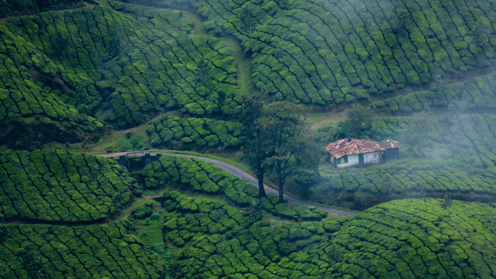
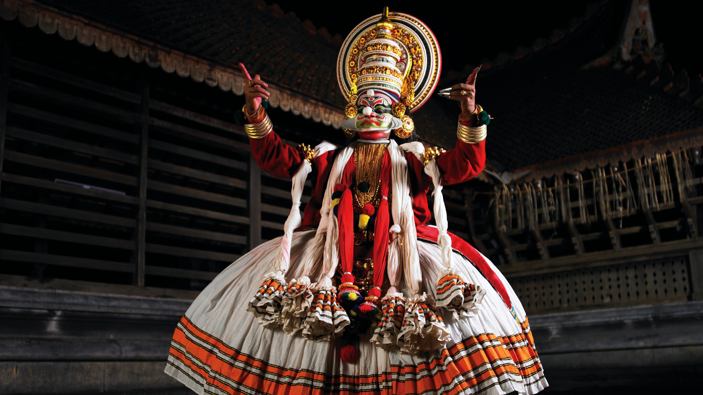

Kerala is a state on the southwestern Malabar Coast of India. It was formed on 1 November 1956, following the passage of the States Reorganisation Act, by combining Malayalam-speaking regions of the erstwhile states of Travancore-Cochin and Madras. Spread over 38,863 km2 (15,005 sq mi), Kerala is the twenty-first largest Indian state by area. It is bordered by Karnataka to the north and northeast, Tamil Nadu to the east and south, and the Lakshadweep Sea to the west. With 33,387,677 inhabitants as per the 2011 Census, Kerala is the thirteenth-largest Indian state by population. It is divided into 14 districts with the capital being Thiruvananthapuram. Malayalam is the most widely spoken language and is also the official language of the state.